Four SOPs to turn Claude into your hardest-working team member.
The companion build kit for the Claude for Founders masterclass. Four SOPs, in the exact order to build them if you were starting from scratch in your business today.
4 weeks, one SOP a weekBeginnerUpdated 5 Nov 2026
Welcome
How to use this kit
This is the companion build kit for the Claude for Founders masterclass. Four SOPs, in the exact order I'd build them if I were starting from scratch in your business today.
Don't try to build all four in one weekend. The layers stack, and each one needs a week of real use before the next one will land properly. Here's the rhythm I'd suggest.
By the end of week four, Claude will be reading your calendar, your inbox, and your tasks every morning, and briefing you before you've made coffee. That's the goal. Everything else builds from there.
If you only ever build SOP 1, you'll already be operating at a level most people using Claude never reach. So start there. Build it properly. Then come back for the rest when you're ready.
01
SOP 01
Set up your Business DNA project
The first thing you build inside Claude. The foundation everything else sits on.
Why this matters
Right now, every time you open Claude, you start from zero. You re-explain your business, your offers, your clients, your voice. Same conversation, every time.
A Project fixes that. It's a dedicated workspace inside Claude where you upload everything about your business once. After that, every chat inside that Project already knows who you are, what you sell, who you serve, and how you sound.
This is the most important setup step in everything you'll do with Claude. If you skip this, every other workflow we build will be weaker than it needs to be.
What you'll have when you're done
A Project inside Claude with four documents loaded into it.
Custom instructions written so Claude knows how to behave inside the Project.
A test chat run inside the Project to confirm everything is working.
Total time: about an hour if you have your business details handy. Two if you're writing from scratch.
Before you start
You need a Claude account. Projects are available on the free tier with a limit of 5, and on paid plans (Pro, Max, Team, Enterprise) with unlimited projects. For business use, I'd recommend Pro or higher: you'll get more usage per session, access to Opus for heavier reasoning, and access to scheduled tasks for SOP 4.
Open claude.ai in your browser and sign in. Have a Google Doc, Notion page, or Word document open in another tab where you'll draft your four bucket documents before uploading.
SOP 01 · Step 1
Create your project
Go to claude.ai and sign in.
Look at the left sidebar and find the Projects section.
Click the plus button next to it.
Give your project a name. Something like "My Business HQ" or "[Your Business Name] Brain." The name doesn't matter. What goes inside it does.
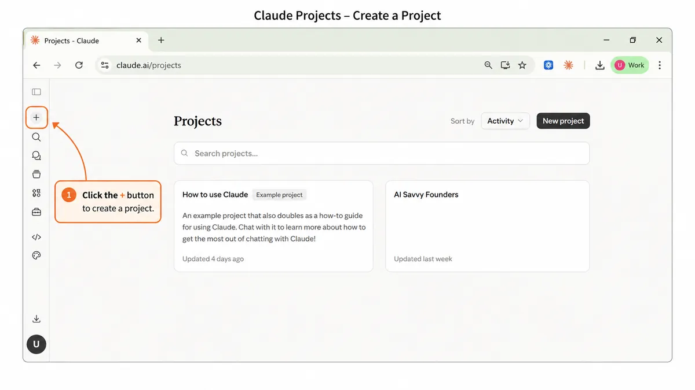
Click the plus button in the Projects page to create a project
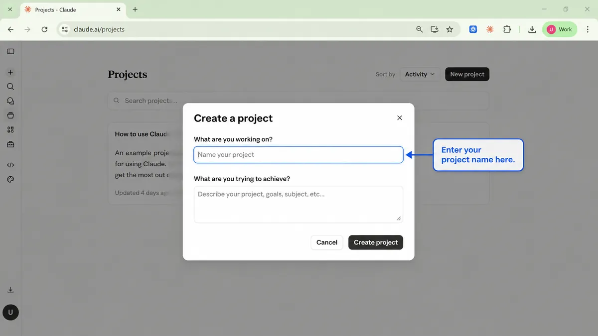
Enter your project name in the Create a project dialog
Your project is now live. You'll see two areas you can edit:
Custom instructions on the right side of the screen.
Knowledge files at the bottom.
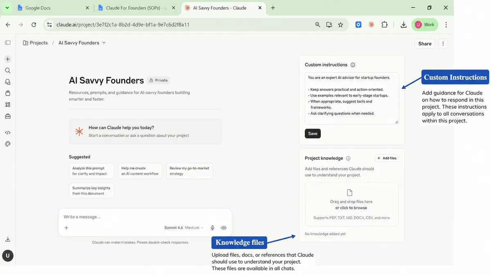
A new project showing Custom instructions on the right and Knowledge files at the bottom
SOP 01 · Step 2
Write your four bucket documents
Open a new Google Doc or Notion page. You're going to draft four documents, one for each bucket. Each is a few paragraphs to a few pages. Quality over length.
Document 1. Who I Am
Write about yourself as the founder. Your name. Your role. Your story and how you got into this work. Your background. What you stand for. What you stand against. Your team if you have one. Your website. Your social handles. Your values. Your mission if you have one written down. Anything that paints a real picture of you as a person, not just a brand.
Stuck? Open a regular Claude chat and ask:
Prompt
Interview me with 20 questions to capture who I am as the founder of my business. Ask me about my background, my values, what I stand for, and how I got here.
Answer the questions. Paste the result into your document.
Document 2. What I Sell
Write about your offer ecosystem. Every service or product you sell. Who it's for. What's included. What it costs. The transformation it creates. How long it takes. What people walk away with. List your packages if you have them. Describe your sales process.
Once this is loaded, you stop having to re-explain your offers every time you draft a proposal or write a sales page. Claude already knows.
Document 3. Who I Serve
Write about your client. Not a demographic profile. A real human description. What's keeping them up at night. What they've already tried that didn't work. What they want to believe is possible. The exact words they use to describe their pain. What they're afraid of. What they secretly hope for.
If you have an ICP document, paste it in. If you have past client interview transcripts, paste them in. Testimonials with phrases your clients actually used, paste those in. The more real human language, the better.
Document 4. How I Sound
Write about your voice. Your writing style. Your banned phrases. The tone you use with clients versus the tone you use on social. Real samples of your past work: three or four social posts you actually wrote, an email you were proud of, a landing page you wrote yourself, a voice note transcript if you have one.
This is the bucket that prevents Claude from sounding like Claude. Without samples, it defaults to its own voice. With samples, it adapts to yours.
SOP 01 · Step 3
Upload your four documents
Go back to your project in Claude.
Scroll to the bottom of the project page and find the Knowledge section.
Click Add Content.
If your documents are in Google Docs, download each one as a DOCX or PDF before uploading. This gives the cleanest result.
Upload each document one at a time. Name each one clearly as you upload.
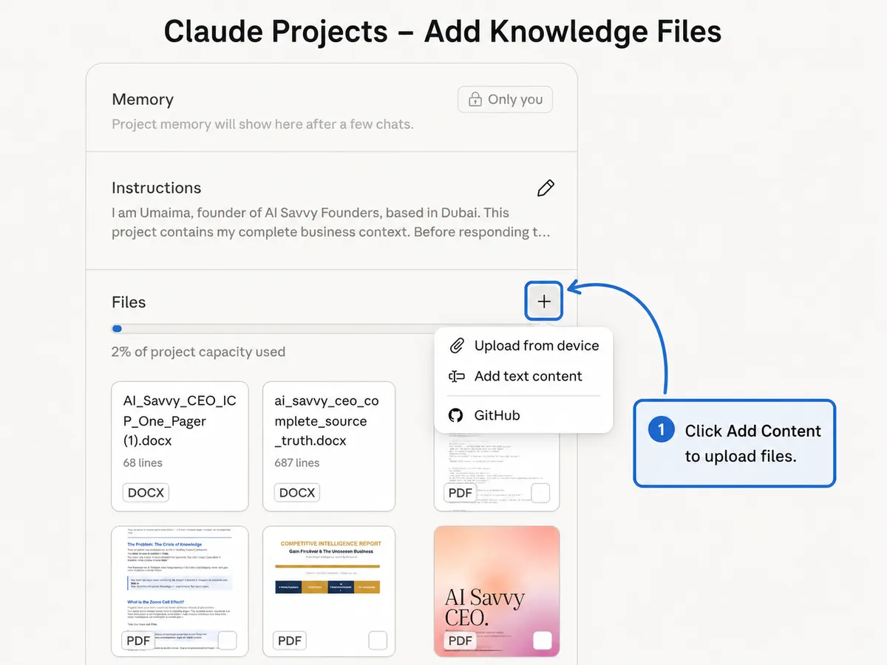
Click Add Content to upload files to the project
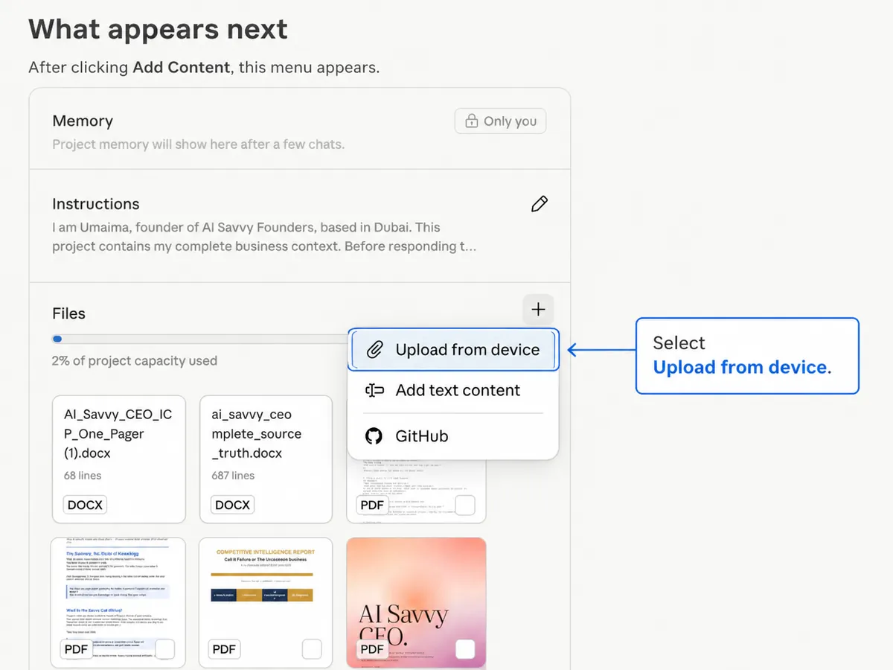
Select Upload from device in the menu that appears
Who I Am
What I Sell
Who I Serve
How I Sound
Once done, you should see all four documents listed in the Knowledge section.
SOP 01 · Step 4
Write your custom instructions
On the right side of the project page, find the Custom Instructions field. This is a short prompt that tells Claude how to behave inside this project.
Keep it between 200 and 500 words. Too short and it gets vague. Too long and Claude starts losing pieces of it in longer conversations.
Copy the template below into the field.
Fill in every bracketed section with your own details.
Save your custom instructions.
Custom instructions template
Template
You are my business assistant. You know my business deeply because everything
about it is in the documents in this project. Always use those documents as your
source of truth before answering.
Here is what you need to know about how to work with me.
Who I am: I'm [your name], founder of [business name]. I help [who you serve]
to [the transformation you create].
How I sound: Write everything in my voice using the writing samples in the
How I Sound document. [Tone: warm, direct, conversational, no corporate
language, no hype.] Never use [your banned words or phrases].
What I sell: My offers are in the What I Sell document. Always reference my
real pricing, packages, and bonuses from that document. Never invent offers
or prices I haven't given you.
Who I serve: My ideal client is described in the Who I Serve document. When
you write anything client-facing, write to that specific person using the
language they actually use.
How to work with me:
- Before writing anything client-facing, check my voice samples and offer details.
- If you're missing information you need, ask me rather than guessing.
- Keep first drafts tight. I'd rather refine something short than cut down
something bloated.
- When you're not sure which direction I want, give me one strong version
rather than three mediocre options.
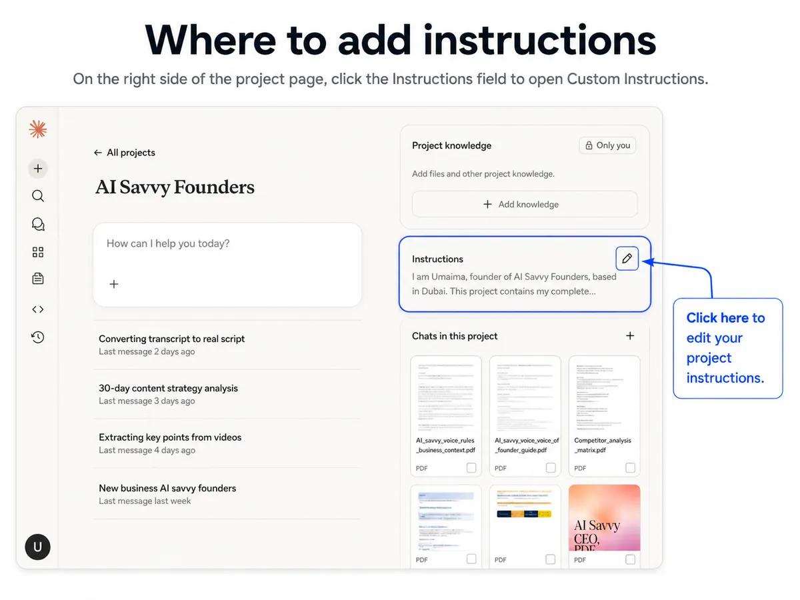
The Instructions field on the right side of the project page
SOP 01 · Step 5
Test your project
Start a new chat inside your Project by clicking the plus button at the top of the Project page. Try this as your first test:
Prompt
Based on the documents in this project, write me a Facebook post about [a topic relevant to your business]. Use my voice. Keep it under 200 words.
Read the output. You're checking three things:
Does it reference your actual business, not a generic version?
Does it sound like you, or like a generic business coach?
Does it mention anything wrong about your offers, your clients, or your positioning?
If something's off, the fix is almost always in your bucket documents. Add detail, upload a new version, run the test again.
Troubleshooting
What you see
Fix
Output sounds generic
Your How I Sound document is too thin. Add three to five more real writing samples.
Output gets your services wrong
Your What I Sell document is too vague. Add specific package names, exact pricing, and what's included.
Output doesn't speak to your actual client
Your Who I Serve document needs more real client language. Add quotes from testimonials and things clients have said to you on calls.
Claude is making things up
Your custom instructions need the line "If you're missing information, ask me rather than guessing." Add it.
DOCX file isn't uploading properly
If your Word file has lots of images, convert to PDF before uploading. DOCX files with images sometimes don't parse cleanly.
A few notes before you move on
You don't need polished documents. Rough versions are fine. Refine over time.
Don't put everything into one massive document. Four separate documents is the right number.
Don't put confidential information into your Project. Use placeholders for client passwords, payment details, personal medical info.
Update your Project regularly. New offers, new client wins, evolved voice. Keep it current.
On the free tier and hit the 5-project limit? Delete an old project or upgrade to Pro.
You're done with SOP 1
Your Business DNA project is live. Claude knows who you are. The foundation is in. Next up: SOP 2, your first skill.
02
SOP 02
Build your first skill
Turn a workflow you do every week into a reusable shortcut.
Why this matters
You've built your Business DNA. Claude knows who you are. Now we're going to teach it how to do the specific things you do over and over, so you never have to give the same instructions twice.
A skill is a saved package of instructions Claude can use any time you ask. Build it once, call it forever. Same quality, every time, across every task.
You can have unlimited skills. They work alongside your Business DNA. They work across all your projects.
What you'll have when you're done
One working custom skill installed in your Claude account.
Tested in a real conversation.
Saving you time the very next time you need it.
Total time: about 30 to 60 minutes for your first skill.
Before you start
You need a Claude account on Pro, Max, Team, Enterprise, or Free. Skills are available on all of these.
If you're on Team or Enterprise, your admin must first enable Code execution and file creation, and Skills, in Organization settings. If you're on Free, Pro, or Max, you can enable everything yourself.
SOP 02 · Step 1
Pick the right task
The biggest mistake people make with their first skill is picking a task that's too vague or too one-off. Skills work best for repeatable work you do at least once a week. Some strong starting points:
A discovery call follow-up email that references the transcript and the lead's specific situation.
A weekly review pulling from your calendar, inbox, and project management tool.
A voice note to social post that turns a one-minute voice memo into a Facebook or LinkedIn post in your voice.
A proposal builder that takes a transcript and writes a draft proposal in your format.
A difficult email drafter for the diplomatic emails you keep putting off.
Pick one. Don't try to build five today.
SOP 02 · Step 2
Build and perfect the prompt first
Open your Business DNA project.
Start a new chat inside it.
Write a prompt that does the task you picked in Step 1.
Run the prompt and read the output.
Tell Claude what's off and refine it.
Run it again. Repeat until the output is something you'd actually use.
Here is an example for the discovery call follow-up:
Prompt
I just had a discovery call with [name] from [company]. Here's the transcript [paste]. Write me a follow-up email that references her specific situation, addresses the hesitation she raised, and includes a clear next step. Reference my services from this project where relevant. Keep it under 200 words. Use my voice from the writing samples in the project.
Important
Don't move on until you've run this prompt at least three times and the output is consistently good.
SOP 02 · Step 3
Ask the Skill Creator skill to help
Anthropic ships a built-in meta-skill called Skill Creator. It's the easiest way to turn a working prompt into a proper skill folder. Open a new chat in claude.ai and type:
Prompt
I want to use the skill-creator skill to build a custom skill. Here's the prompt I've been using: [paste your working prompt]. Walk me through building this into a proper skill.
Skill Creator will ask you for the key parts:
Name. Short, descriptive. Like "discovery-call-follow-up" or "voice-note-to-post."
Description. Under 50 words. This is what Claude reads to decide when to use the skill. Write it like a clear trigger.
Instructions. The actual prompt you refined in Step 2, written cleanly as steps Claude will follow.
When you're done, Skill Creator gives you a downloadable ZIP file containing your skill folder.
SOP 02 · Step 4
Install the skill
In claude.ai, click Customize on the left sidebar.
Click Skills.
Click the plus button.
Click Create skill.
Click Upload and select your ZIP file.
Your skill will appear in your skills list.
Make sure the toggle next to it is turned on.
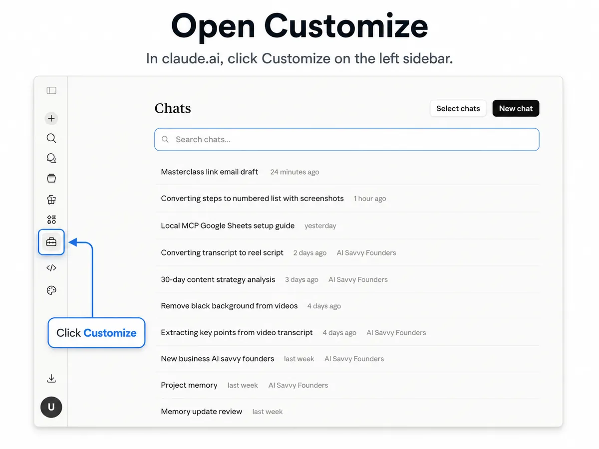
Click Customize on the left sidebar
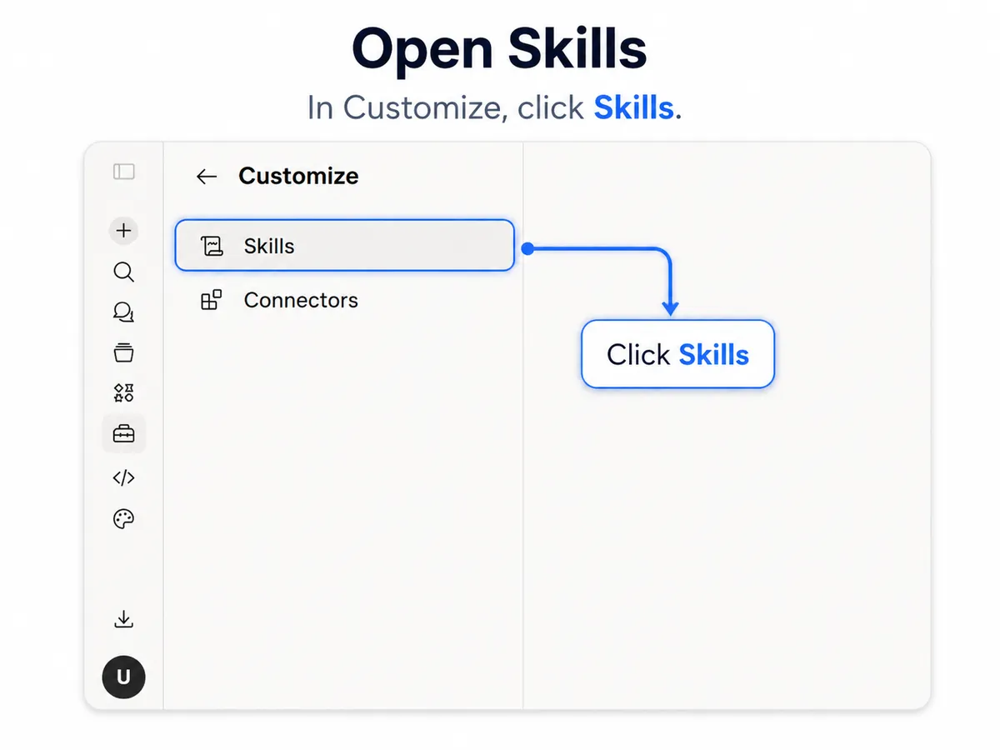
In Customize, click Skills
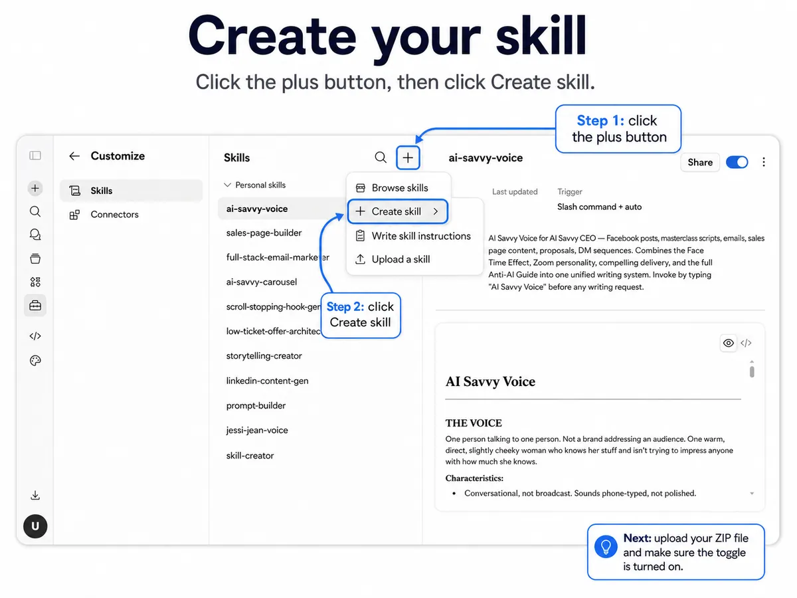
Click the plus button, then Create skill
SOP 02 · Step 5
Test your skill
Open a new chat in your Business DNA project. Run the same kind of task the skill is designed for. For the discovery call follow-up skill, start a chat and say:
Prompt
Run my discovery call follow-up skill. Here's the transcript [paste].
Or describe the task and Claude will figure out which skill to use:
Prompt
Write me a follow-up email for the call I had with Sarah today. Here's the transcript.
If the output looks right, your skill is working. If it's off, the fix is almost always in the skill's instructions. Update the SKILL.md file, re-zip, and upload again as a new skill.
SOP 02 · Step 6
Build your first five skills
Once you've built one, the next ones go faster. Here are the five I'd build in your first month, in this order:
Discovery Call Follow-Up
Voice Note to Post
Weekly Review
Proposal Builder
Difficult Email Drafter
Build one per week. Don't try to build all five at once. You learn more by living with each skill for a few days before building the next.
Troubleshooting
What you see
Fix
Claude isn't using my skill when I expect it to
The description is too vague. Update it to include specific trigger phrases like "follow-up email after a discovery call" instead of just "emails."
The output sounds different from what I built
Your skill might be conflicting with your Business DNA project instructions. Make sure the skill defers to your project's voice and offers.
I can't see the Skills option in my sidebar
If you're on Team or Enterprise, ask your admin to enable Skills and Code execution. If you're on Free, Pro, or Max, refresh your browser or restart Claude.
My ZIP file won't upload
The ZIP needs to contain the skill folder as its root, not a subfolder. Re-zip just the skill folder itself.
A few notes before you move on
Skills uploaded to Free, Pro, and Max are private to your account. They can't be shared.
On Team or Enterprise, sharing a skill with your team is done by your admin through Organization settings.
Skills work everywhere Claude does, but they shine inside Projects. The skill's instructions combined with the Project's context is where the real magic happens.
Update your skills as your business changes. New services, evolved voice, refined offers.
You're done with SOP 2
Your first skill is live. Now we connect Claude to your actual tools. Next up: SOP 3, connectors.
03
SOP 03
Connect Claude to your real tools
Give Claude permission to look inside your tools so it stops waiting for you to paste things in.
Why this matters
So far, everything Claude knows is whatever you've uploaded to your Project or typed into a chat. That's a lot, but it's not real-time. Every time you want Claude to use information from Gmail or your calendar, you copy and paste it in.
Connectors fix that.
A connector is a permission slip. You give Claude permission to look inside one of your tools. Once you do, Claude can read what's actually happening in that tool, in real time, when you ask.
This is where Claude stops being a chatbot and starts feeling like a teammate that knows what's happening in your business.
What you'll have when you're done
Four core connectors active: Google Calendar, Gmail, Google Drive, and one project management tool.
Each one tested with a real prompt.
Total time: about 20 to 30 minutes.
Before you start
Google Workspace connectors (Gmail, Google Calendar, Google Drive) are available to all Claude users, including the free tier. Other connectors like Asana, Slack, Linear, and Notion are also available.
For Team and Enterprise plans, your admin must enable connectors at the organization level first. For Free, Pro, and Max, you can connect everything yourself.
How connectors actually work
You control the access. When you connect a tool, you go through an authorisation screen telling you exactly what Claude is asking for. Google's screen mentions permission to send email, but by default Claude asks for your approval before every action it takes on your behalf. For Gmail, my recommendation is simple: keep those approvals on and let Claude draft only. Never send.
Claude only uses a connector when you ask. It doesn't read your emails in the background. It doesn't scan your calendar overnight. The moment you ask a question that needs the tool, Claude pulls in what it needs, uses it, and that's it.
Claude mirrors your permissions. It can only see what you already have access to in those tools. It doesn't go beyond them.
SOP 03 · Step 1
Connect Google Calendar
On the left sidebar of claude.ai, click Customize.
Click Connectors.
Click the plus button at the top.
Find Google Calendar in the list.
Click Connect.
Google's standard authorisation screen will open. Review what Claude is asking for.
Click Allow.
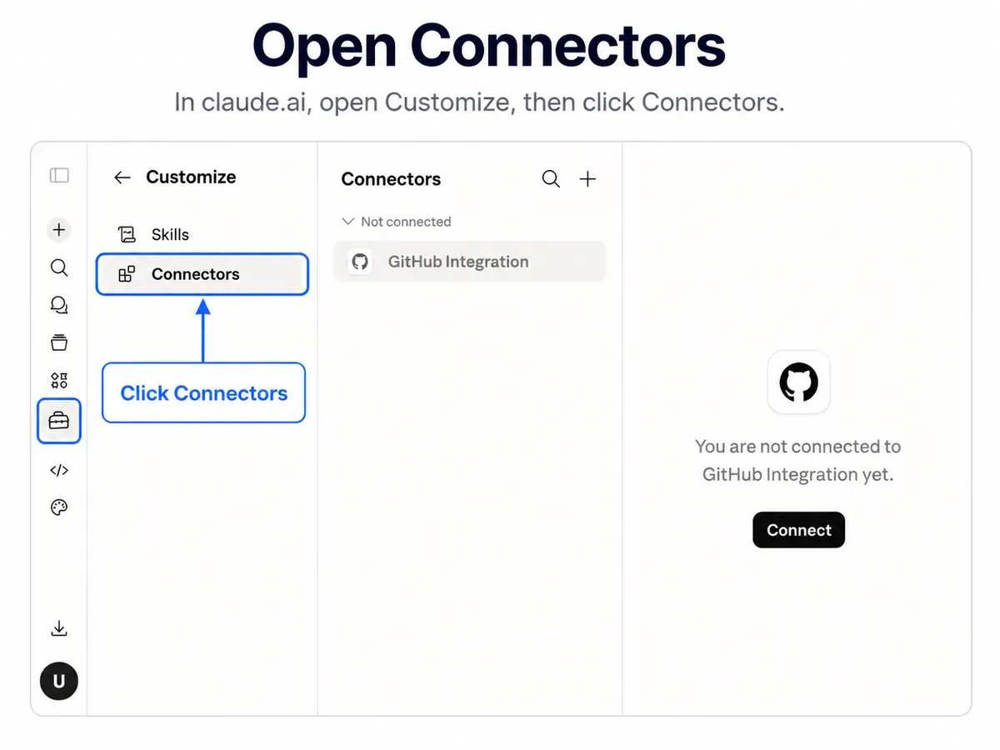
In Customize, click Connectors
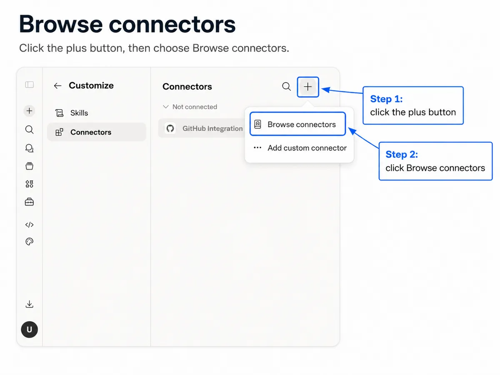
Click the plus button, then Browse connectors
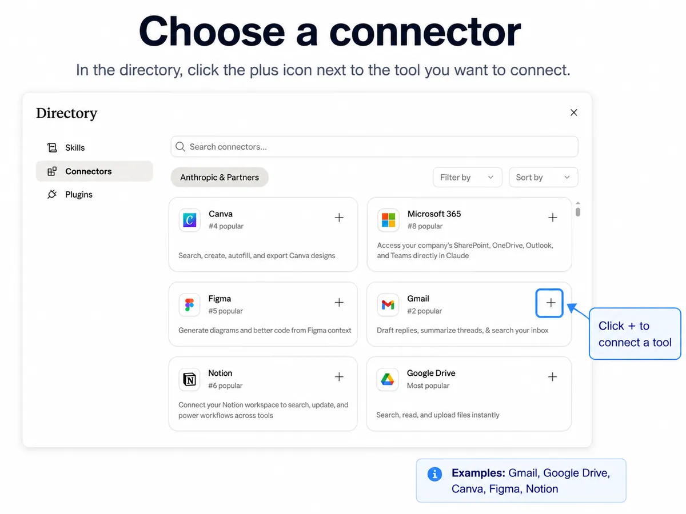
In the directory, click the plus icon next to the tool you want to connect
Open a new chat and test it by typing:
Prompt
What does tomorrow look like?
Claude will pull your calendar events for tomorrow and summarise them.
SOP 03 · Step 2
Connect Gmail
Go back to Connectors in the left sidebar.
Click the plus button.
Find Gmail in the list.
Click Connect.
The Google authorisation screen will open. Read it carefully. It mentions permission to send email, and there's no read-only option to pick. Here's how it works in practice (below).
Click Allow.
Read and search. Claude can find and read your emails.
Draft. Claude can prepare emails for your review.
Send, reply and forward. Claude can do all three, but by default it asks for your approval first. Keep that approval on.
Warning
Leave approvals on. Never let Claude send an email without checking with you first.
Open a new chat inside your Business DNA project and test it by typing:
Prompt
Find the email thread with [client name] about [topic] and summarise where we are.
Claude will search Gmail, read the thread, and give you a clean summary.
SOP 03 · Step 3
Connect Google Drive
Go back to Connectors in the left sidebar.
Click the plus button.
Find Google Drive in the list.
Click Connect.
Review the authorisation screen and click Allow.
Once connected, Claude can search your Drive and pull from your documents when relevant. Useful for proposals, briefs, and reference documents you don't want to upload into every project. Test it:
Prompt
Find my services document in Google Drive and tell me what's in it.
SOP 03 · Step 4
Connect your project management tool
Go back to Connectors in the left sidebar.
Click the plus button.
Find your project management tool in the list. Available options include Asana, ClickUp, Notion, Linear and Trello.
Click Connect.
Follow the authorisation flow for your tool.
Test it:
Prompt
What's outstanding on the [client name] project this week?
Claude should pull your tasks and give you a clean overview.
SOP 03 · Step 5
Put it all together
Now you can do something most people don't realise is possible. Open a new chat in your Business DNA project and type:
Prompt
What does my Tuesday look like? Find any emails I haven't replied to that matter for my Tuesday meetings. Pull anything outstanding on related Asana projects. Summarise everything in three sections.
Claude pings Calendar. Gmail. Asana. Reads what matters. Cross-references. Gives you a brief.
Three tools. One sentence. That's the shift.
Troubleshooting
What you see
Fix
The connector isn't showing up after I authorise it
Refresh your browser. If it's still not there, check Customize > Connectors to confirm it's listed and toggled on.
Claude says it can't access my tool
The connector might have lost authorisation. Go back to Customize > Connectors, disconnect it, and reconnect.
My company tool isn't on the list
Look for an MCP version. Most modern SaaS tools (HubSpot, Salesforce, Slack, GitHub, Linear, Notion) have MCP connectors. Install through Claude Desktop, not the browser.
I'm worried about privacy
Every action Claude takes is visible in your chat. You see exactly which email, document, or task it pulled. Every response cites its sources. Revoke any connector at any time from Customize > Connectors.
A few notes before you move on
Start with the four core ones. Calendar, Gmail, Drive, project management. Don't try to connect ten things at once.
Don't connect things you don't actually use. More connectors don't make Claude smarter. They make it noisier.
Approvals are your safety net. By default Claude asks before it acts on your behalf. Leave that on until you trust how Claude is using a tool.
Disconnect any time from Customize > Connectors. Nothing is permanent.
You're done with SOP 3
Your connectors are live. Claude can see what's happening in your business in real time. Now we put it on a schedule. Next up: SOP 4, your morning brief.
04
SOP 04
Set up your morning brief
Get Claude to read your day and brief you before you've made coffee.
Why this matters
So far, every chat with Claude has started when you started it. You open Claude, you ask, it answers. You're still the one initiating every conversation.
Scheduled tasks change that.
A scheduled task is a Claude task that runs by itself, at a specific time, on a specific day. You decide what runs and when. Claude does the rest.
The first one to build is the Morning Brief. It's the most universal scheduled task and the most satisfying first win. The moment you wake up to your first one and read it in bed, you'll understand why this is the layer that changes everything.
What you'll have when you're done
One scheduled task that runs every weekday morning.
It reads your calendar, your inbox, your project tool, and Slack.
Delivers a clean HTML brief to your inbox before you've opened your laptop.
Total time: about 15 to 20 minutes once your connectors are set up.
Before you start
Scheduled tasks are built into Claude, which now combines chat and Cowork. If you still see separate Chat and Cowork options, use Cowork. The steps below work either way.
You'll need a paid plan. Scheduled tasks are on Pro, Max, Ultra, Team, and Enterprise. Not the free tier. On Team and Enterprise, your admin controls access.
You don't need the Claude Desktop app for this one, but I'd still recommend it. If you don't have it, download it from claude.ai and sign in with your existing account. Same Projects, same skills, same connectors. The desktop app just adds access to the files on your computer.
You also need your connectors set up from SOP 3. The Morning Brief pulls from Calendar, Gmail, your project management tool, and Slack. Make sure they're all connected before you continue.
One important thing
Because the Morning Brief only uses your connectors, it runs in the cloud. Your computer can be asleep and the app can be closed. The exception is any task that needs files or apps on your computer. Those run locally, so the desktop app must be open and your computer awake.
SOP 04 · Step 1
Open Claude
Open Claude on the web, the desktop app, or your phone.
Sign in if you haven't already.
If you still see separate Chat and Cowork options, click Cowork.
Everything in this SOP happens inside Claude.
SOP 04 · Step 2
Use this Morning Brief prompt
Here's the exact prompt I use for my own daily briefing. You can run it as-is or customise it. Replace the name in the first line and the subject line with your own.
Morning Brief prompt
Prompt
You are running [Your Name]'s daily MVP briefing. Check all connected tools
and compile a full daily report. The user is NOT present, work autonomously
and make reasonable assumptions.
## Steps:
1. Google Calendar. List today's events and any upcoming events in the next
3 days. Note times, titles, and any conflicts.
2. Asana. Get all incomplete tasks assigned to [Your Name] across all
projects. Flag anything overdue or due today.
3. Gmail. Search for unread emails from the last 24 hours. Summarise the
most important ones. Ignore newsletters and automated emails.
4. Slack. Search for messages sent to [Your Name], DMs, and any @mentions
in the last 24 hours. Summarise key conversations and action items.
## At the end:
Create a full breakdown of all the tasks:
- Subject: "Daily MVP Briefing, [Today's Date]"
- A clean, well-formatted HTML email summarising everything found above:
calendar events, Asana tasks, important emails, and Slack highlights with
any action items clearly listed.
Keep the tone friendly and professional. If a section has nothing to report,
say so briefly.
Open a new chat. Paste the prompt. Replace the bracketed bits with your own name. Run it once to test.
Read the output. Refine it if needed. Tell Claude what's missing, what's noisy, what should be cut. When the output is something you'd genuinely use, you're ready to schedule it.
SOP 04 · Step 3
Create the scheduled task
There are two ways to set up scheduled tasks. Both work.
Option A. Using the Scheduled page
In the left sidebar, click Scheduled to open the Scheduled tasks page.
Click New task in the upper right, then choose Set up manually.
Give the task a name, then paste your refined prompt into the prompt field.
Set the frequency: hourly, daily, weekdays, weekly, or manual.
Set the time. For the Morning Brief, I recommend 7am, or whatever time gives you about an hour before you actually start working.
Choose the model and set the approval mode. Sonnet works well for the Morning Brief. Save the task.
Option B. Using the /schedule command
In any conversation, describe the task and when it should run, for example:
Prompt
Every weekday at 7am, brief me on my calendar, inbox, and tasks.
You can also type /schedule. Claude will walk you through the details and show you the task to review before you click Schedule. Either way works. Use whichever you prefer.
SOP 04 · Step 4
Run it manually once
Before you trust the schedule, run the task manually one time. This confirms the prompt works the way you want, and it triggers any final permission approvals from your connectors.
On the Scheduled tasks page, open your task and run it on demand.
Claude will execute the task. Read the output.
If it looks right, you're ready for tomorrow morning.
SOP 04 · Step 5
Wake up to your first brief
The next morning at your scheduled time, the task fires automatically. The result lands on the Scheduled page in your sidebar, and in your inbox if you formatted it as an email like the prompt above.
To get notifications on your phone, make sure mobile notifications are turned on for the Claude app. The brief will appear in the same chat thread on your phone that it appeared in on your desktop.
Read it. See how it feels. Then go make coffee.
SOP 04 · Step 6
Refine over the first week
The first few briefs won't be perfect. That's normal. After day one, you'll know what to add and what to cut. Common adjustments:
Problem
Add this to your prompt
Too long
"Keep the brief under 150 words."
Missing context for specific clients
"When you mention a client by name, include one sentence about what's currently happening with them."
Too many low-priority emails
"Only include emails that need a response today. Skip newsletters, marketing, and anything I can ignore."
Edit your task on the Scheduled tasks page. Save. The next run will use the updated prompt.
Troubleshooting
What you see
Fix
The task didn't run
Check the Scheduled tasks page first, in case the task is paused. If your task needs files or apps on your computer, it runs locally, so your computer must be awake and the Claude app open. If you're using a laptop, plug it in overnight and keep the lid open with the app running.
Output is missing my Calendar or Gmail data
A connector might need re-authorisation. Go to Customize > Connectors in Claude and confirm everything is connected. Run the task manually to test.
I'm not getting mobile notifications
Make sure you've installed the Claude mobile app, signed in with the same account, and enabled notifications. Scheduled task results trigger as regular chat notifications.
Output is too generic
Your prompt needs more specificity. Tell Claude what to prioritise, what to skip, and how you want it formatted.
A few notes before you move on
Don't schedule things you haven't tested manually first. If you wouldn't be confident with the output running unsupervised, don't schedule it yet.
Start with one task. Live with the Morning Brief for a full week before adding another. Trust takes time.
When you're ready to add more, the next two I'd build are the Friday Weekly Review (Fridays at 4pm) and the Pre-Call Brief (weekdays at noon, reads your afternoon calendar, pulls intake forms for any sales calls).
Drafts only, never sends. If you build scheduled tasks that draft emails or messages, always set them to save as a draft. Never let Claude send anything without you reviewing it.
You can pause, edit, or delete any task from the Scheduled tasks page. Nothing is permanent.
You're done with SOP 4
Your Morning Brief is live. Claude is now working in the background of your business. The infrastructure is real.
That's it
You've built the team.
Four SOPs. One Claude account. A project that knows your business, a skill that runs on repeat, the connectors that give it access, and a schedule that puts it to work.
That's the whole employee. Onboarded, trained, equipped, and on a shift. Most people using Claude never see this layer. You now have it built.
If you ever get stuck, come back to whichever SOP matches what's broken. They're written to be re-read, not just read once. And if you want help building the next layers, the proposal builder, the client onboarding workflow, the content engine, that's what the AI Business Audit is for.
One last thing
Pick one workflow this week. Just one. The thing that drains you the most. Build it. The version of you who does that is already on a different path than the one who read this kit and meant to get to it later.
Umaima AI Savvy Founders
Version history
v1.0 · 5 Nov 2026 · Web version of the Claude for Founders Starter Toolkit.